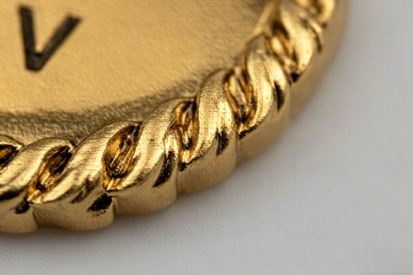
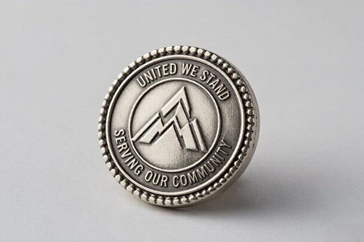

Why the Edge Matters
The edge frames the entire coin and sets its personality before anyone reads a single word of the design. It is the part people fidget with, the part that catches the light at an angle, and the part that gives a coin its tactile character. Two coins with the same front design can feel completely different in the hand simply because of the edge.
The edge also has a practical function. Certain edges — like the chain edges — add grip and a rugged, machined feel, while others, like the bezel edge, create a raised rim that protects and frames the center design. Choosing an edge is as much about how the coin feels and wears as it is about how it looks.
Because the edge is cut into the die before striking, it is worth deciding on early. Changing it later means cutting a new die, so it pays to understand your options up front. Every edge on this list is available on any of our coin styles, from soft enamel to minted proof finishes.
Standard Edge
The standard edge is a clean, smooth, unadorned rim, and it is the default for a reason: it is versatile and lets the face of the coin do all the talking. There is no texture to distract from the design, which makes it a strong choice for modern, minimal, and corporate coins where a clean look matters.
The standard edge is also the most subtle option. If your design is busy or your brand is all about simplicity, a standard edge keeps the focus where it belongs. It pairs well with hard enamel and bright platings, where a decorative edge might compete with the polished surface.
Rope Edge
The rope edge features a twisted, cable-like rim that wraps around the coin, evoking a classic, nautical, traditional feel. It is one of the most popular non-standard edges because it adds texture without being overpowering, and it gives the coin a sense of history and craftsmanship.
A rope edge works beautifully with military and organizational coins, where the twisted rim reads as rugged and time-tested. It also adds a nice tactile element — the ridges feel satisfying to the touch — which makes it a favorite for coins that get handled and passed around.
Chain Edges: Chain, Bike Chain, and Heavy Chain
The chain edges take the rope concept further, with rims that look like actual interlocking chain links. There are three levels of intensity. The chain edge has a standard interlocking-link pattern; the bike chain edge is chunkier, resembling a bicycle chain with larger links; and the heavy chain edge uses oversized links for maximum texture and presence.
Chain edges are bold and tactile, and they read as tough and rugged. They are especially popular for military, law enforcement, and motorcycle club coins, where the chain motif carries a strong connotation of strength and solidarity. If you want an edge that people notice the moment they pick the coin up, a chain edge delivers.
The trade-off is that chain edges are busy. They work best with simpler face designs — a strong central emblem rather than a detailed illustration — so the rim and the design do not compete for attention.
Cross-Cut and Reeded Edges
The cross-cut edge features angled cuts around the rim, giving the coin a machined, tactical, almost knurled look. It is a favorite for military and EDC-style coins because it feels precise and engineered, like a tool rather than a keepsake. The angled cuts also provide grip, which suits coins meant to be handled.
The reeded edge, by contrast, has fine vertical grooves around the rim — the same edge you see on a US quarter or dime. It gives the coin a minted, currency-like feel and is an excellent choice for commemorative and collectible pieces, especially those with a proof finish. It is subtler than the cross-cut edge and reads as classic and refined.
Sunburst, Spur, and Oblique Edges

For coins that call for something more decorative, the sunburst, spur, and oblique edges offer distinct personalities. The sunburst edge radiates fine rays outward from the center, framing the design like a halo. It is dramatic and works especially well on commemorative and patriotic coins.
The spur edge features repeating notches or points around the rim, giving a western, star-like, or spiked character. It is a bold statement edge that suits themed coins — rodeo, western, and law enforcement designs come to mind. The oblique edge uses slanted cuts for a dynamic, directional feel that suggests motion and energy, which makes it a nice fit for sports and racing-themed coins.
All three of these edges are more decorative than functional, so they work best when you want the rim to be part of the design statement rather than a quiet frame. They pair well with bold, single-emblem faces.
Bezel and Leaf Edges
The bezel edge creates a raised, polished rim around the coin, similar to the setting on a piece of jewelry. It frames the center design and gives the coin a premium, jewelry-like quality. This edge is a strong choice for awards, executive gifts, and any coin meant to look high-end.
The leaf edge uses a scalloped, organic pattern that resembles a laurel or leaf border. It has a classic, ceremonial feel and is often seen on commemorative and recognition coins. The leaf edge is elegant and slightly formal, making it a natural fit for honors, retirements, and awards.
How to Choose an Edge
The simplest way to choose an edge is to match it to the mood of the design. Here is a quick reference:
| Edge | Personality | Best For |
|---|---|---|
| Standard | Clean, modern | Corporate, minimal designs |
| Rope | Classic, traditional | Military, organizational coins |
| Chain / Bike Chain / Heavy Chain | Rugged, bold | Military, law enforcement, clubs |
| Cross-Cut | Tactical, machined | EDC, tactical, military |
| Reeded | Minted, refined | Commemorative, collectible |
| Sunburst | Dramatic, radiant | Patriotic, commemorative |
| Spur | Western, bold | Themed, western, law enforcement |
| Oblique | Dynamic, energetic | Sports, racing themes |
| Bezel | Premium, jewelry-like | Awards, executive gifts |
| Leaf | Elegant, ceremonial | Honors, retirements, awards |
When in doubt, think about how the coin will be used and how it should feel in the hand. A coin that gets carried and traded suits a tactile edge like rope or chain; a coin that gets displayed suits a refined edge like bezel or reeded; a coin that makes a bold statement suits a decorative edge like sunburst or spur.
Edge and Design Compatibility
A common mistake is choosing a decorative edge for a design that is already busy. The edge should complement the face, not compete with it. If your design is detailed — lots of fine lines, text, and color — a quiet edge like standard or reeded keeps the coin from feeling cluttered. If your design is a single bold emblem, a more decorative edge adds richness without overwhelming it.
Plating also interacts with the edge. Antique finishes settle into the recesses of a rope or chain edge and emphasize the texture, which is part of why antique-finish coins with rope edges look so traditional. Bright platings on a bezel edge, by contrast, shine around the rim and reinforce a premium, modern feel. Consider the plating and the edge together for the most cohesive result.
Edges for Different Audiences
The edge you choose should speak to the people who will receive the coin, and different audiences respond to different cues. A military or first-responder audience tends to favor edges that feel earned and rugged — rope, chain, and cross-cut edges carry that weight. A corporate audience often prefers something cleaner and more understated — standard, reeded, or bezel edges read as professional rather than decorative.
For a commemorative or honorary audience, more expressive edges like sunburst, leaf, and bezel convey the ceremony of the occasion. And for themed coins — western, sports, patriotic — edges like spur and oblique reinforce the theme and make the coin feel more cohesive. Matching the edge to the audience is a subtle form of respect: it shows you thought about who the coin is for.
If you are unsure what a given audience expects, look at the coins they already carry. The edges on those coins tell you the visual language the group responds to, and following that language helps your coin feel like it belongs rather than like an outsider.
The Edge and the Coin's Story
Every edge tells a small story, and the best coins use that story to reinforce the design. A rope edge on a naval coin evokes the rigging of a ship; a chain edge on a motorcycle club coin suggests the drive chain of a bike; a reeded edge on a commemorative coin recalls struck currency. These associations are subtle, but they add a layer of meaning that elevates a coin from decoration to storytelling.
Think about what your coin represents and whether an edge can echo that meaning. The right edge does not just frame the design — it deepens it, giving the coin a richness that rewards a closer look. It is a small touch, but small touches are what separate a memorable coin from a forgettable one.
Edge Options and Cost
The good news is that most edge options do not meaningfully change the cost of your coin, because the edge is cut into the die at the same time as the design. The main cost drivers remain the size, enamel style, and plating. This means you can choose an edge for its look and feel without worrying much about the price tag.
The one thing to keep in mind is lead time. Because each edge requires its own die, changing your mind about the edge after the die is cut means cutting a new one. Decide on the edge before you approve the proof, and the rest of the process is smooth.
Edge Choices for Specific Coin Types

Different coin types have natural edge pairings that make the design feel cohesive. Military and law enforcement coins gravitate toward rope and cross-cut edges, which read as rugged and earned. Organizational and club coins favor chain edges for their strong, tactile character, while commemorative and collectible pieces often use reeded or sunburst edges for a minted, ceremonial feel.
Corporate and executive coins usually keep things quieter, with a standard, bezel, or reeded edge that reads clean and professional. Awards and honors lean toward the bezel or leaf edge, both of which carry an elegant, jewelry-like quality. Matching the edge to the coin's audience is a small decision that makes a big difference in how the coin is received.
If you are ordering a themed coin — a western, sports, or patriotic design — a more expressive edge like spur, oblique, or sunburst can reinforce the theme and make the coin feel more intentional. The edge is a chance to say something about the coin's personality, and it is worth using that chance deliberately.
How the Coin Edge Is Made
The edge of a challenge coin is not a separate piece — it is cut into the die that stamps the coin, which means the edge and the face are produced together in a single strike. The die is machined with the edge pattern around its perimeter, so when the metal is struck, the textured rim forms at the same moment as the design.
This is why changing the edge after the fact requires a new die. It is also why most edge options do not add meaningfully to the cost — the pattern is simply part of the die-cutting process. The one exception is very intricate edge work, which can require more precise machining, but even then the difference is usually small.
For minted proof coins, the edge is often reeded or plain in the tradition of struck currency, while cast and stamped coins can carry the full range of decorative edges. The production method and the edge style go hand in hand, and a good manufacturer will guide you toward the combinations that work best.
The Tactile Experience of the Edge
The edge is the one part of a challenge coin that people constantly touch, and that tactile quality matters more than most designers realize. A rope edge feels warm and traditional under the thumb; a cross-cut edge feels precise and machined; a smooth standard edge feels clean and unobtrusive. The right edge invites handling, which is exactly what you want from a coin meant to be carried and passed around.
This is especially relevant for coins given as recognition or keepsakes, because people will fidget with them during meetings, on desks, and in pockets. A coin with a satisfying edge gets handled more, which means it gets noticed more. If you want your coin to be a daily companion rather than a drawer item, choose an edge with tactile appeal.
Combining Edges With Plating and Finish
The edge and the plating work together, and the combination can dramatically change the look. Antique finishes settle into the recesses of a rope, chain, or cross-cut edge and emphasize the texture, which is why antique-finish coins with textured edges look so traditional and rich. Bright platings, by contrast, shine along the rim and give the edge a clean, modern highlight.
Black nickel plating creates a strong contrast that makes any edge pattern stand out in silhouette, which is particularly striking on chain and cross-cut edges. When you are deciding on a coin, think about the plating and the edge as a pair — a textured edge with an antique finish reads completely differently from the same edge with bright gold.
Edge Trends and Modern Styles
While the classic edges have been around for decades, a few modern trends have emerged as challenge coins have moved into new markets. The cross-cut edge, with its machined, tactical look, has become a favorite for EDC and everyday-carry coins, reflecting the broader interest in precision-engineered products. Similarly, the bezel edge has grown popular as coins trend toward a more jewelry-like, premium aesthetic.
Two-tone and mixed-metal coins have also brought new life to edge design, pairing a textured edge with a contrasting plating to make the rim a focal point in its own right. And as more brands order custom die-cut shapes, edges are being tailored to follow unusual silhouettes, which lets the edge and the shape work together for a more cohesive result.
The takeaway is that edges are no longer an afterthought — they are a design opportunity. Whether you lean classic or modern, choosing an edge that fits your coin's personality is one of the simplest ways to make it stand out from the thousands of generic coins in circulation.
Asking for a Sample of Your Edge
Because the edge is hard to visualize from a flat image, it is worth asking your manufacturer for a sample or a clear close-up photo before you finalize a textured edge. Most manufacturers can provide sample photos of each edge style, and some can send a physical sample ring or a small set of edge examples for a nominal fee.
Your free digital proof will show the edge in the render, but a physical sample lets you feel the texture and judge the depth in a way no image can. If the edge is important to your design — and it should be — this small extra step is well worth it before you approve production.
Edges for Custom-Shaped Coins
Custom die-cut coins open up a special consideration for the edge: the edge now has to follow an irregular outline rather than a simple circle, and not every edge style works on every shape. Some edges, like the rope or chain edge, follow a custom outline beautifully and add texture around the entire silhouette. Others, like a deep reeded edge, are harder to apply cleanly to a complex shape.
When ordering a custom shape, it is worth asking your manufacturer which edge styles work best for that particular outline. A good manufacturer will tell you honestly which combinations will look clean and which will fight the shape. The goal is an edge that enhances the silhouette rather than one that looks forced or uneven.
In practice, custom shapes often pair best with a standard, rope, or bezel edge, which follow outlines cleanly and keep the focus on the silhouette itself. The shape is already a strong design statement, so a quieter edge often works better than a highly textured one that competes for attention.
Frequently Asked Questions
Which edge is the most popular?
Rope and standard edges are the most common. Rope offers a classic, tactile feel, while standard keeps the design clean and focused.
Can I combine edge styles?
A coin uses one edge style per side, but different edge effects can be achieved through plating and finishing. Talk to your designer about the look you want.
Do decorative edges cost more?
Generally not. Most edge styles are cut into the die at the same time as the design, so they do not meaningfully affect cost.
Can I see the edge before ordering?
Yes. Your free digital proof shows the edge style, and we can provide sample photos of each edge on request.
Conclusion
The edge is a small detail with an outsized effect on how a challenge coin feels and reads. Whether you choose a clean standard edge, a rugged chain edge, or a premium bezel edge, the key is to match it to the personality of your design and the occasion it marks.
Not sure which edge fits your coin? Get a free quote and proof, and we will help you compare edge styles on your actual design before you commit.
The edge may be the smallest part of the coin, but it is the part people touch first — and that first touch sets the tone for everything that follows. Choose it with the same care you give the emblem, and the coin will feel complete in a way that quietly sets it apart.